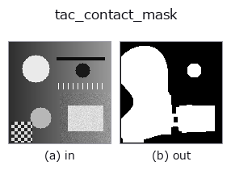

tactile op• 数据种类:image → region
• 调用:fullseye.apply(img, "tac_contact_mask", a=0.5, b=0.5)(2-D 的模型是一张图 + 两个标量旋钮 a,b∈[0,1])

*图为在 128×128 合成输入上实际运行的输出。左为输入，右为输出。点云以俯视散点显示(亮度 = z)，一维序列为折线，体数据为沿 z 的最大值投影，视频为中间帧，复数图像为幅值；无法成像的返回值直接显示数值。*
扫描旋钮 a(0.1 / 0.5 / 0.9，另一旋钮取默认):
▸ tac_contact_mask: knob a sweep (docs site)
扫描旋钮 b(0.1 / 0.5 / 0.9，另一旋钮取默认):
▸ tac_contact_mask: knob b sweep (docs site)
换别的图像(合成场景 / 照片 / 硬币。上排为输入，下排为对应输出。旋钮取默认):
▸ tac_contact_mask: other inputs (docs site)
*第 4 列是彩色 (H,W,3) 输入。此算子能正确处理颜色而不跨通道(不把颜色通道当作第三个空间轴卷积)。*
通过伪参考背景减除来求触觉帧的接触区域:`dev = |v - G_sigma(v)|,其中 sigma = max(2, min(H,W)/6)(低频包络代替未形变的参考帧),以 thr = 0.005 + 0.145*a 灰度级阈值化,再经 round(3*b) 次二值开运算(opening)后接二值闭运算(closing)(3x3、8 连通)清理。a = 偏差阈值(灵敏度),b` = 形态学清理强度。返回输入 HxW 大小的二值(BINARY)0/1 float64 区域;完全平坦(常数)的帧在各处偏差均为零,因此得到空掩膜。
• 示例数据目录(下载 URL / 许可证) —— 2-D 用 skimage.data(BSD/公有领域)加合成图,3-D 给出真实数据源(Stanford/PDS 等)的下载 URL。
• 算子来历与参考文献 —— 该算子族所依据的研究/方法出处。
下面的程序已确认可以运行(与图相同的输入)。在 Studio 帮助中，此块会变成按钮，可当场加载并运行。
tac_contact_mask 0.50 0.50
▸ Load this pipeline · Load & run
• sim2real_and_alife — py -3.11 examples/sim2real_and_alife.py
region 作为输入)identity · reg_erode · reg_dilate · reg_open · reg_close · fill_holes · select_largest · remove_small
tactile)tac_height_from_shading · tac_surface_normal · tac_pressure_proxy · tac_shear_field
*Provenance: ops.py — 2D 算子登记表。本条目由 tools/opdocs.py md 自动生成(请勿手工编辑)。*
© 2026 Kazufumi Furuse — Fullseye operator documentation. Licensed under Apache-2.0.
{kind=link}
{kind=link}
{kind=link}